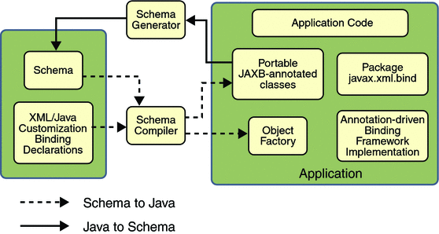
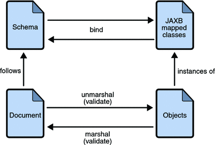

Arquitectura JAXB
Esta sección describe los componentes y las interacciones en el modelo de procesado JAXB.
Descripción General de la Arquitectura
La figura siguiente muestra los componentes que componen una implementación de JAXB.
Figura: Descripción General de la Arquitectura JAXB

Una implementación JAXB consiste de los siguientes componentes arquitectónicos:
-
Compilador de Esquema: Vincula un esquema fuente a un conjunto de elementos de programa derivados del
esquema. La vinculación se describe por un lenguaje de vinculación basado en XML.
-
Generador de esquema: Vincula un conjunto de elementos de programas existentes a un esquema derivado. El
mapeo se describe por anotaciones de programa.
-
Estructura en tiempo de ejecución de vinculación: Proporciona las operaciones de separación
(unmarshalling) y agrupación (marshalling) para acceder, manipular, y validar contenido XML usando esquemas
derivados o elementos de programa existentes.
El Proceso de Vinculación de JAXB
La siguiente figura muestra qué ocurre durate el proceso de vinculación JAXB.
Figura: Pasos en el Proceso de Vinculación JAXB

Los pasos generales en el proceso de vinculación de datos de JAXB son:
-
Generar clases: Se usa un esquema XML como entrada al compilador de vinculación de JAXB para generar clases
JAXB basadas en ese esquema.
-
Compilar las clases: Todas las clases generadas, ficheros fuente, y código de aplicación debe ser compilado.
-
Desagrupar (Unmarshall): Los documentos XML escritos de acuerdo a las restricciones en el esquema fuente son
desagrupados por el marco de trabajo de vinculación JAXB. Tenga en cuenta que JAXB también soporta el
separar datos XML desde otras fuentes distintas a ficheros y documentos, tales como nodos DOM, cadenas
en memoria, fuentes SAX, etcétera.
-
Generar el árbol de contenido: El proceso de separación (unmarshalling) genera un árbol de contenido de
objetos de datos instanciados desde las clases generadas por JAXB; este árbol de contenidos representa la
estructura y contenido de los documentos XML fuente.
-
Validar (opcional): El proceso de separación (unmarshalling) involucra la validación de los documentos
XML fuente antes de generar el árbol de contenido. Tenga en cuenta que si modifica el árbol de contenido en
el Paso 6, puede también usar la operación de Validación de JAXB para validar los cambios antes de realizar
la agrupación (marshalling) del contenido de vuelta a un documento XML.
-
Procesar el contenido: La aplicación cliente puede modificar los datos XML representados por el árbol de
contenidos de Java usando las interfaces generadas por el compilador de vinculación.
-
Agrupar (Marshal): Se agrupa el árbol de contenido procesado en uno o más documentos XML de salida. El
contenido puede ser validado antes de la agrupación (marshalling).
Más Sobre la separación (Unmarshalling)
La separación (unmarshalling) proporciona a una aplicación cliente la habilidad de convertir datos XML en
objetos de Java derivados a través de JAXB.
Más Sobre la Agrupación (Marshalling)
La agrupación (marshalling) proporciona a una aplicación cliente la habilidad de convertir un árbol de objetos
de Java derivados de JAXB en datos XML.
De forma predeterminada, el Marshaller usa la codificación UTF-8 cuando genera datos XML.
No se requiere que las aplicaciones clientes validen el árbol de contenidos Java antes de la agrupación
(marshalling). Tampoco hay ningún requisito de que el árbol de contenido Java sea válido con respecto a su
esquema original al agruparlo (marshal) en datos XML.
Más Sobre la Validación
La validación es el procesor de verificar que un documento XML cumple con todas las restricciones expresadas en
el esquema. JAXB 1.0 proporcionó validación en tiempo de separación y también validación habilitada a
demanda e un árbol de contenido JAXB. JAXB 2.0 sólo permite la validación en tiempo de separación y
agrupación. Un modelo de procesado de servicio web debe ser laxo al leer los datos de entrada y estricto al
escribirlos a la salida. Para cumplir con ese modelo, se agregó la validación al tiempo de agrupación de forma
que los usuarios pudieran confirmar que no invalidaron un documento XML al modificar el documento en formato
JAXB.